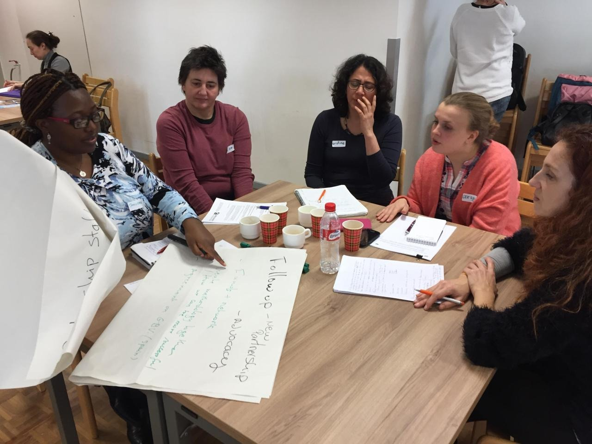
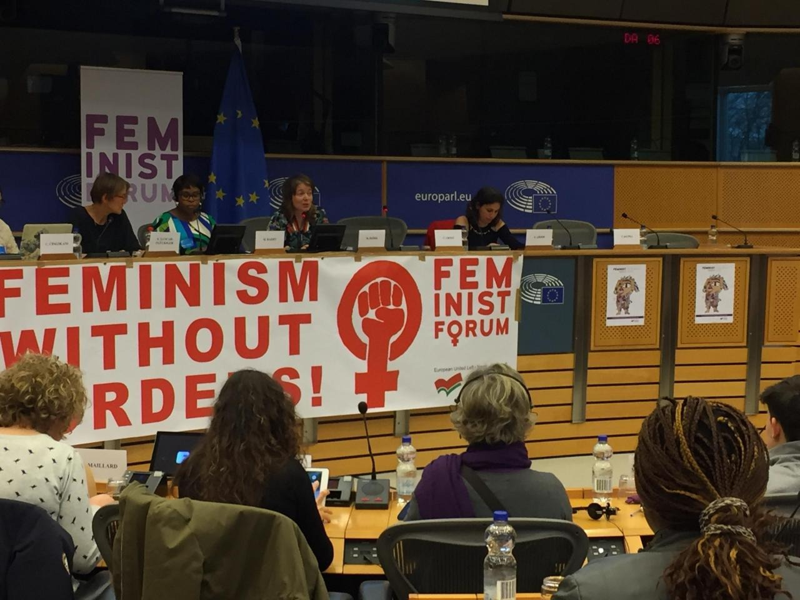

Vi skapar möjligheter för kvinnor att utvecklas, skapa nätverk, delta aktivt och växa genom egenmakt, integration och inkluderande nätverk.
WOMEN EMPOWERMENT and INTEGRATION NETWORK är en ideell förening som grundades år 2015. Vi arbetar med hållbara kvinnor och integration i Sverigeb> genom utbildningar och innovativa metoder som erbjuder en väg till yrkesutbildning och professionell insats.
WEINSE arbetar för att bidra till förbättrad uppväxt och levnadsvillkor för de boende i områden med socioekonomiska utmaningar och bidra till ökad jämlikhet genom att skapa en bättre hälsa, trygghet, utbildning och sysselsättning samt en välfungerande inkludering i Sverige.
Vårt team har en mångkulturell bakgrundoch innehar en stor mångfald i såväl ålder, utbildningsbakgrund och som tidigare erfarenhet. Detta har hjälpt till att utveckla utbildningsmetoder som är både smidiga och innovativa.
Vi strävar efter att tackla integrationsproblem och främja självutveckling genom ständigt samarbete och optimering av våra metoder för mentorskap och nätverkande med våra partners.

Vi utvecklar innovativa arbetsmetoder med målet att skapa hållbara kvinnor integrationsmodeller inom det svenska samhället. På WEINSE är vårt uppdrag att skapa en bättre framtid för individer och samhällen i socioekonomiskt utsatta områden.
WEINSE jobbar mot hedersvåld och för kvinnorättigheter och möjlighet att bevara kulturella traditioner som ligger i linje med svensk lag. Verksamheten ska tillsammans med samhällets föreningar, studieförbund och organisationer stärka förutsättningarna för kvinnor att hitta trygghet för alla invånare i socioekonomiskt utsatta områden. Arbetet ska stärka kvinnor och uppmuntra dem till att vara delaktiga på den plats där de bor. Att förebygga utanförskap genom olika aktiviteter som attraherar olika målgrupper och för människorna samman är en viktig del i arbetet.
Över 100 personer har nåtts av WEINSE samhällsorienterade verksamhet. Våra insatser har varit omfattande och inkluderar initiativ för att främja sysselsättning och språkutveckling med mera.
Några av de mest anmärkningsvärda resultaten som uppnåtts genom WEINSE program inkluderar En betydande ökning av antalet personer från underrepresenterade samhällen som har hittat anställning genom våra jobbplaceringar Lanseringen av framgångsrika icke-formella utbildningsprogram (språkcafe) som har gett individer möjligheter att utveckla språket, Etableringen av mentor- och nätverksmöjligheter som har hjälpt till att koppla samman individer med de resurser och det stöd de behöver för att lyckas, Utvecklingen av unika och innovativa metoder för yrkesutbildning och yrkesintroduktion som har hjälpt många kvinnor utrikesfödda att bli aktiva medlemmar i samhället, Etableringen av multilaterala och bilaterala samarbeten som har möjliggjort för oss att utveckla ramverk för arbetsbaserad utbildning baserat på marknadens behov.

Personlig och professionell vägledning som hjälper kvinnor att bygga självförtroende, hitta riktning och skapa starka nätverk.
Praktiska utbildningsmöjligheter som stärker färdigheter, anställningsbarhet och ledarskap.
Professionell rådgivning och stöd till organisationer som arbetar med egenmakt, mångfald och integration.
Vi stärker organisationer och samhällen genom kunskap, resurser och hållbar utveckling.
Forskning och kunskapsutveckling med fokus på kvinnor, migration, integration och social delaktighet.
Välkommen till Göteborg för ett forum med fokus på nätverkande, samarbete, egenmakt och starkare organisationer för migrantkvinnor.
Utforska initiativ som skapar verkliga möjligheter för kvinnor och samhällen.
Här kommer vi att presentera aktuella och genomförda projekt, partnerskap och samhällsinitiativ.
Utforska projekt →Skapa kontakter med kvinnor, yrkesverksamma, organisationer och samhällsaktörer som arbetar tillsammans för kvinnors egenmakt och integration.
Bli medlem